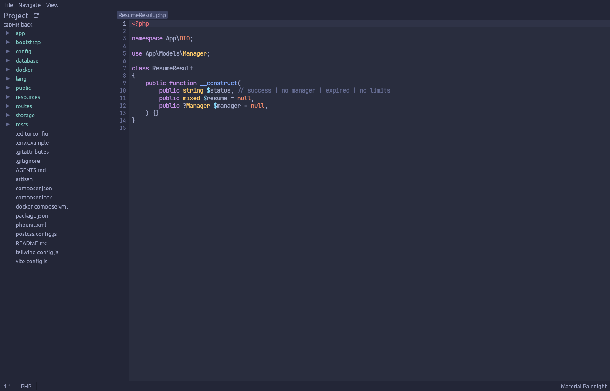
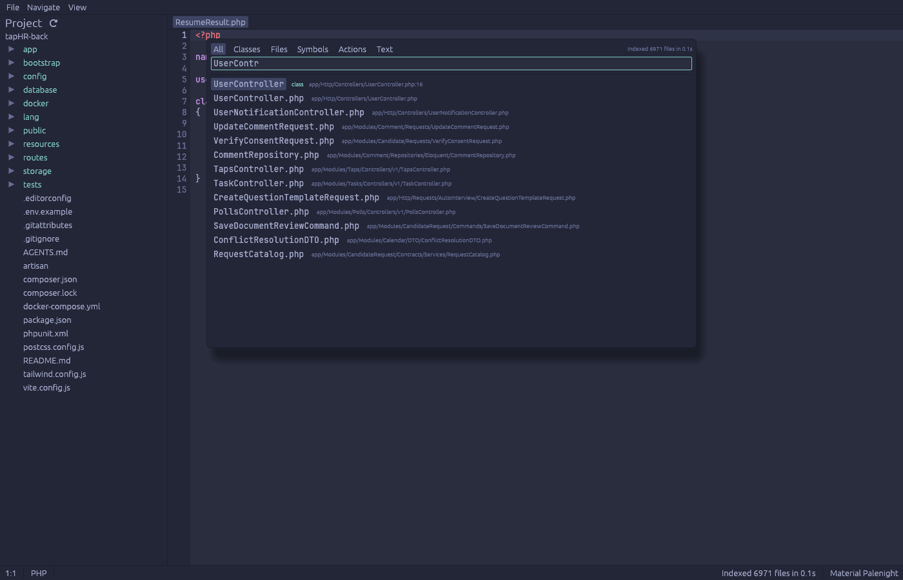
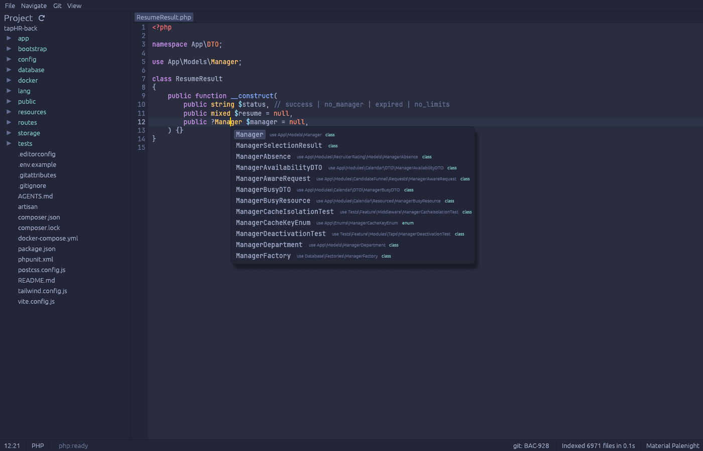
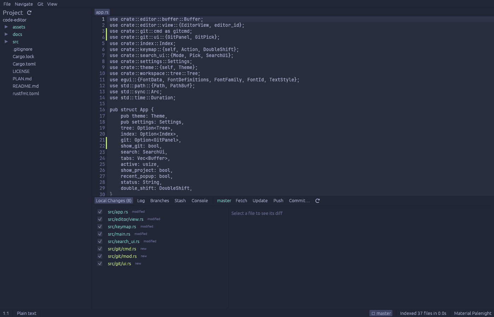
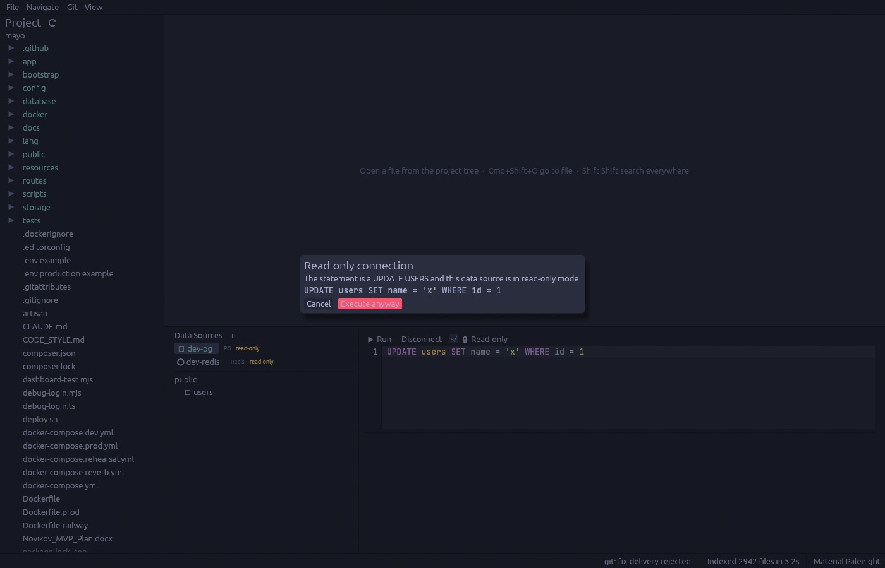
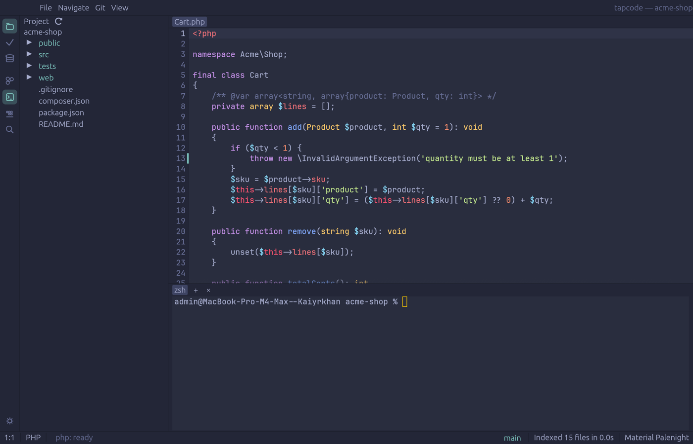

Open source · Rust · macOS
An IDE for PHP, JS and TS.
Fast, because it is Rust.
Editor, search, Git, databases, Docker and a terminal in one window. No web view. No lag.
View on GitHub Build from source

What it does
Editor
Tree-sitter highlighting for PHP, JS, TS, JSON, HTML, CSS, Markdown, YAML and SQL. Undo, find and replace, auto-indent, auto-save.
Search Everywhere
Shift Shift. Go to file, class or symbol. Find and replace in path. All from the keyboard.
Instant index
SQLite with full-text search. Updates as files change. Big projects stay fast.
Code intelligence
LSP built in. Completion, hover, go to definition, find usages and errors for PHP and TypeScript.
Git
Commit, push, pull, branches, merge, rebase, stash, log and blame. Diff right in the editor.
Databases
Postgres and Redis. Tree of schemas and tables, SQL console, grid. Read-only by default, so you cannot break prod by mistake.
Docker
Containers, images and compose. Start, stop, logs, exec into a terminal tab.
Terminal
Real PTY with tabs and true color. Alt+F12 and you are there.
Screens

Search Everywhere 
Completion 
Git 
Database, read-only guard 
Terminal


Build from source
You need Rust stable and git. For code intelligence, install Node (servers start via npx). For the Docker panel, Docker Desktop.
git clone https://github.com/khandroider/tapcode
cd tapcode
cargo run --release -- ~/path/to/projectWant an app bundle?
sh dev/bundle.sh && open target/tapcode.app